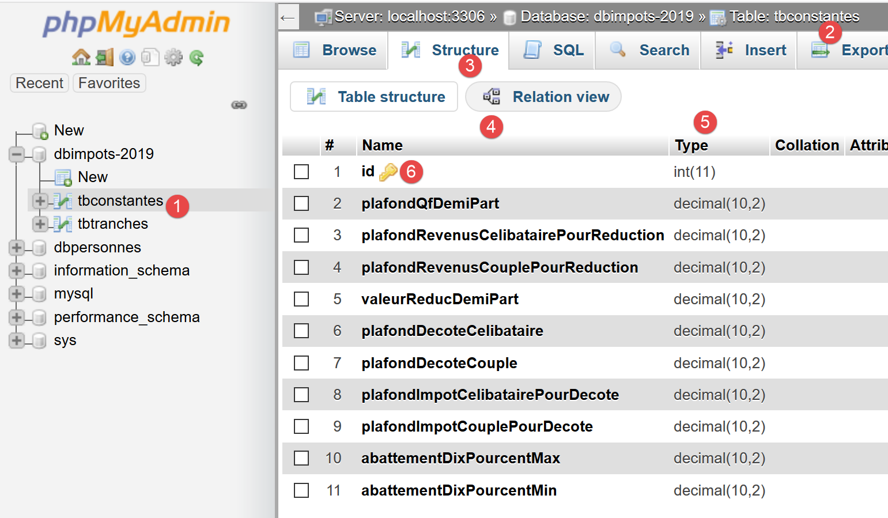
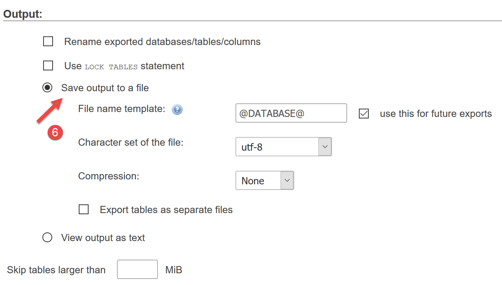
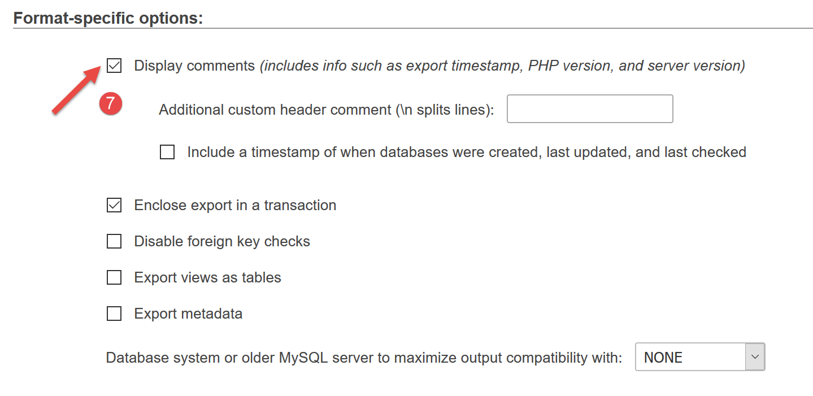
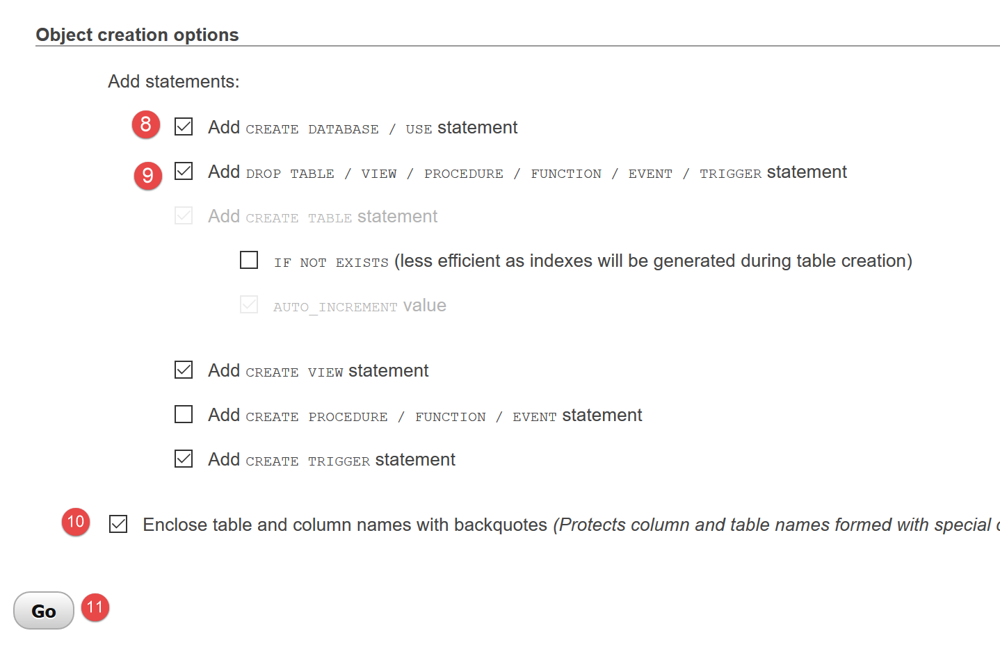

13. Esercizio pratico – versione 5

Abbiamo già scritto diverse versioni di questo esercizio. L’ultima versione utilizzava un’architettura a livelli:

Il livello [dao] implementa un'interfaccia [InterfaceDao]. Abbiamo creato una classe che implementa tale interfaccia:
- [DaoImpotsWithTaxAdminDataInJsonFile] che recuperava i dati fiscali da un file jSON;
Implementeremo l’interfaccia [InterfaceDao] tramite una nuova classe [DaoImpotsWithTaxAdminDataInDatabase] che recupererà i dati dell’amministrazione fiscale da un database MySQL.
13.1. Creazione del database [dbimpots-2019]
Seguendo l’esempio riportato nel paragrafo collegato, creiamo un database MySQL denominato [dbimpots-2019], il cui proprietario sarà [admimpots] con la password [mdpimpots]:

- nel [1-4] sopra riportato, vediamo il database [dbimpots-2019] che per il momento non contiene tabelle;

- nel [1-5] sopra riportato, vediamo che l’utente [admimpots] dispone di tutti i diritti sul database [dbimpots-2019]. Ciò che qui non vediamo è che questo utente ha la password [admimpots];
Ora creiamo la tabella [tbtranches] che conterrà le fasce di imposta:

- in [1-7], creiamo una tabella denominata [tbtranches] con 4 colonne;

- in [3-6] definiamo una colonna denominata [id] (3), di tipo intero [int] (4), che fungerà da chiave primaria [6] della tabella e sarà autoincrementata [5] dal SGBD. Ciò significa che MySQL gestirà autonomamente i valori della chiave primaria al momento degli inserimenti. Assegnerà il valore 1 alla chiave primaria del primo inserimento, poi 2 a quello successivo, ecc.;
- in [7], la procedura guidata ci propone altre opzioni di configurazione della chiave primaria. In questo caso ci limitiamo a confermare i valori predefiniti in [7];

- in [8-16], si definiscono le altre tre colonne della tabella:
- [limites] (8) di tipo numero decimale (9) a 10 cifre, di cui 2 decimali (10), conterrà gli elementi della colonna 17 delle fasce d’imposta;
- [coeffR] (11) di tipo numero decimale (12) a 6 cifre, di cui 2 decimali (13), conterrà gli elementi della colonna 18 delle fasce d’imposta;
- [coeffN] (14), di tipo numero decimale (15) a 10 cifre, di cui 2 decimali (16), conterrà gli elementi della colonna 19 delle fasce d’imposta;
Dopo aver convalidato questa struttura, otteniamo il seguente risultato:

- in [5], l’icona della chiave indica che la colonna [id] è la chiave primaria. Si nota inoltre che questa chiave primaria ha valori interi (6) ed è gestita (autoincrementata) da MySQL;
Allo stesso modo in cui abbiamo creato la tabella [tbtranches], creiamo la tabella [tbconstantes] che conterrà le costanti per il calcolo dell’imposta:

È possibile esportare la struttura del database in un file di testo sotto forma di una sequenza di comandi SQL:

L’opzione [5] esporta in questo caso solo la struttura del database e non il suo contenuto. Nel nostro caso, il database non ha ancora alcun contenuto.



L'opzione [11] genera il seguente file SQL [dbimpots-2019.sql]:
-- phpMyAdmin SQL Dump
-- versione 4.8.5
-- https://www.phpmyadmin.net/
--
-- Host: localhost:3306
-- Ora di generazione: 30 giugno 2019 alle 01:10 PM
-- Versione del server: 5.7.24
-- PHP Versione: 7.2.11
SET SQL_MODE = "NO_AUTO_VALUE_ON_ZERO";
SET AUTOCOMMIT = 0;
START TRANSACTION;
SET time_zone = "+00:00";
/*!40101 SET @OLD_CHARACTER_SET_CLIENT=@@CHARACTER_SET_CLIENT */;
/*!40101 SET @OLD_CHARACTER_SET_RESULTS=@@CHARACTER_SET_RESULTS */;
/*!40101 SET @OLD_COLLATION_CONNECTION=@@COLLATION_CONNECTION */;
/*!40101 SET NAMES utf8mb4 */;
--
-- Database: `dbimpots-2019`
--
CREATE DATABASE IF NOT EXISTS `dbimpots-2019` DEFAULT CHARACTER SET utf8 COLLATE utf8_general_ci;
USE `dbimpots-2019`;
-- --------------------------------------------------------
--
-- Struttura della tabella `tbconstantes`
--
DROP TABLE IF EXISTS `tbconstantes`;
CREATE TABLE `tbconstantes` (
`id` int(11) NOT NULL,
`plafondQfDemiPart` decimal(10,2) NOT NULL,
`plafondRevenusCelibatairePourReduction` decimal(10,2) NOT NULL,
`plafondRevenusCouplePourReduction` decimal(10,2) NOT NULL,
`valeurReducDemiPart` decimal(10,2) NOT NULL,
`plafondDecoteCelibataire` decimal(10,2) NOT NULL,
`plafondDecoteCouple` decimal(10,2) NOT NULL,
`plafondImpotCelibatairePourDecote` decimal(10,2) NOT NULL,
`plafondImpotCouplePourDecote` decimal(10,2) NOT NULL,
`abattementDixPourcentMax` decimal(10,2) NOT NULL,
`abattementDixPourcentMin` decimal(10,2) NOT NULL
) ENGINE=InnoDB DEFAULT CHARSET=utf8;
-- --------------------------------------------------------
--
-- Struttura della tabella `tbtranches`
--
DROP TABLE IF EXISTS `tbtranches`;
CREATE TABLE `tbtranches` (
`id` int(11) NOT NULL,
`limites` decimal(10,2) NOT NULL,
`coeffR` decimal(10,2) NOT NULL,
`coeffN` decimal(10,2) NOT NULL
) ENGINE=InnoDB DEFAULT CHARSET=utf8;
--
-- Indici per le tabelle esportate
--
--
-- Indici per la tabella `tbconstantes`
--
ALTER TABLE `tbconstantes`
ADD PRIMARY KEY (`id`);
--
-- Indici per la tabella `tbtranches`
--
ALTER TABLE `tbtranches`
ADD PRIMARY KEY (`id`);
--
-- AUTO_INCREMENT per le tabelle esportate
--
--
-- AUTO_INCREMENT per la tabella `tbconstantes`
--
ALTER TABLE `tbconstantes`
MODIFY `id` int(11) NOT NULL AUTO_INCREMENT;
--
-- AUTO_INCREMENT per la tabella `tbtranches`
--
ALTER TABLE `tbtranches`
MODIFY `id` int(11) NOT NULL AUTO_INCREMENT;
COMMIT;
/*!40101 SET CHARACTER_SET_CLIENT=@OLD_CHARACTER_SET_CLIENT */;
/*!40101 SET CHARACTER_SET_RESULTS=@OLD_CHARACTER_SET_RESULTS */;
/*!40101 SET COLLATION_CONNECTION=@OLD_COLLATION_CONNECTION */;
È possibile utilizzare questo file SQL per rigenerare il database [dbimpots-2019] qualora fosse stato distrutto o alterato. In questo caso non è necessario eliminare il database prima di rigenerarlo, poiché lo script SQL provvede a farlo autonomamente:


13.2. Organizzazione del codice
Per illustrare meglio il ruolo dei diversi script PHP che stiamo scrivendo, organizzeremo il nostro codice in cartelle:

- in [1], panoramica della versione 05;
- in [2], le entità dell’applicazione, entità scambiate tra i livelli;
- in [3], le utilità dell’applicazione;
- in [4], i dati utilizzati o prodotti dall’applicazione. Abbiamo deciso di utilizzare esclusivamente file jSON per i file di testo. Questi presentano diversi vantaggi:
- sono riconosciuti da molti strumenti;
- questi strumenti dispongono della colorazione sintattica. Inoltre, la notazione jSON segue delle regole precise. Quando queste non vengono rispettate, gli strumenti lo segnalano. Ad esempio, un errore difficile da individuare in un file di testo semplice è l’uso della O maiuscola o minuscola al posto degli zeri. Se si verifica questo errore, verrà segnalato. Infatti, nel codice jSON:
"plafondRevenusCouplePourReduction": 42O74
dove è stata inserita inavvertitamente una O maiuscola al posto dello zero in [42074], NetBeans segnala l’errore:

Infatti, NetBeans riconosce la O maiuscola che trasforma [49O74] in una stringa di caratteri. Ne deduce che la sintassi dovrebbe essere [4-5]: la stringa [47O74] dovrebbe essere racchiusa tra virgolette. L’attenzione dello sviluppatore viene quindi attirata sull’errore e può correggerlo: o inserendo le virgolette, oppure sostituendo la O con uno zero;
Gli altri elementi della versione 05 sono i seguenti:

- in [6], le interfacce e le classi del livello [Dao];
- in [7], le interfacce e le classi del livello [métier];
- in [8], gli script principali della versione 05;
La versione 05 ha due obiettivi distinti:
- compilare la base MySQL [dbimpots-2019] con il contenuto del file jSON [Data/txadmindata.json];
- implementare il calcolo dell’imposta utilizzando i dati fiscali provenienti ora dal database MySQL [dbimpots-2019];
Tratteremo questi due obiettivi separatamente.
13.3. Popolamento del database [dbimpots-2019]
13.3.1. Obiettivo
Il file di testo taxadmindata.json contiene i dati dell’amministrazione fiscale:
{
"limites": [
9964,
27519,
73779,
156244,
0
],
"coeffR": [
0,
0.14,
0.3,
0.41,
0.45
],
"coeffN": [
0,
1394.96,
5798,
13913.69,
20163.45
],
"plafondQfDemiPart": 1551,
"plafondRevenusCelibatairePourReduction": 21037,
"plafondRevenusCouplePourReduction": 42074,
"valeurReducDemiPart": 3797,
"plafondDecoteCelibataire": 1196,
"plafondDecoteCouple": 1970,
"plafondImpotCouplePourDecote": 2627,
"plafondImpotCelibatairePourDecote": 1595,
"abattementDixPourcentMax": 12502,
"abattementDixPourcentMin": 437
}
Il nostro obiettivo è trasferire questi dati nel database MySQL [dbimpots-2019] creato in precedenza.
13.3.2. Le entità

L’entità [Database] servirà a incapsulare i dati del seguente file jSON [database.json]:
{
"dsn": "mysql:host=localhost;dbname=dbimpots-2019",
"id": "admimpots",
"pwd": "mdpimpots",
"tableTranches": "tbtranches",
"colLimites": "limites",
"colCoeffR": "coeffr",
"colCoeffN": "coeffn",
"tableConstantes": "tbconstantes",
"colPlafondQfDemiPart": "plafondQfDemiPart",
"colPlafondRevenusCelibatairePourReduction": "plafondRevenusCelibatairePourReduction",
"colPlafondRevenusCouplePourReduction": "plafondRevenusCouplePourReduction",
"colValeurReducDemiPart": "valeurReducDemiPart",
"colPlafondDecoteCelibataire": "plafondDecoteCelibataire",
"colPlafondDecoteCouple": "plafondDecoteCouple",
"colPlafondImpotCelibatairePourDecote": "plafondImpotCelibatairePourDecote",
"colPlafondImpotCouplePourDecote": "plafondImpotCouplePourDecote",
"colAbattementDixPourcentMax": "abattementDixPourcentMax",
"colAbattementDixPourcentMin": "abattementDixPourcentMin"
}
L’entità [TaxAdminData] servirà a incapsulare i dati del seguente file jSON [taxadmindata.json]:
{
"limites": [
9964,
27519,
73779,
156244,
0
],
"coeffR": [
0,
0.14,
0.3,
0.41,
0.45
],
"coeffN": [
0,
1394.96,
5798,
13913.69,
20163.45
],
"plafondQfDemiPart": 1551,
"plafondRevenusCelibatairePourReduction": 21037,
"plafondRevenusCouplePourReduction": 42074,
"valeurReducDemiPart": 3797,
"plafondDecoteCelibataire": 1196,
"plafondDecoteCouple": 1970,
"plafondImpotCouplePourDecote": 2627,
"plafondImpotCelibatairePourDecote": 1595,
"abattementDixPourcentMax": 12502,
"abattementDixPourcentMin": 437
}
L’entità [TaxPayerData] servirà a incapsulare i dati del seguente file jSON [taxpayerdata.json]:
[
{
"marié": "oui",
"enfants": 2,
"salaire": 55555
},
{
"marié": "ouix",
"enfants": "2x",
"salaire": "55555x"
},
{
"marié": "oui",
"enfants": "2",
"salaire": 50000
},
{
"marié": "oui",
"enfants": 3,
"salaire": 50000
},
{
"marié": "non",
"enfants": 2,
"salaire": 100000
},
{
"marié": "non",
"enfants": 3,
"salaire": 100000
},
{
"marié": "oui",
"enfants": 3,
"salaire": 100000
},
{
"marié": "oui",
"enfants": 5,
"salaire": 100000
},
{
"marié": "non",
"enfants": 0,
"salaire": 100000
},
{
"marié": "oui",
"enfants": 2,
"salaire": 30000
},
{
"marié": "non",
"enfants": 0,
"salaire": 200000
},
{
"marié": "oui",
"enfants": 3,
"salaire": 20000
}
]
13.3.2.1. La classe base [BaseEntity]
Per semplificare il codice delle entità, adotteremo la seguente regola: gli attributi di un’entità hanno gli stessi nomi degli attributi del file jSON che l’entità deve incapsulare. In base a questa regola, le entità [Database, TaxAdminData, TaxPayerData] presentano caratteristiche comuni che possono essere fattorizzate in una classe padre. Si tratterà della seguente classe [BaseEntity]:
<?php
namespace Application;
class BaseEntity {
// attributo
protected $arrayOfAttributes;
// inizializzazione da un file jSON
public function setFromJsonFile(string $jsonFilename) {
// si recupera il contenuto del file dei dati fiscali
$fileContents = \file_get_contents($jsonFilename);
$erreur = FALSE;
// errore?
if (!$fileContents) {
// si registra l'errore
$erreur = TRUE;
$message = "Le fichier des données [$jsonFilename] n'existe pas";
}
if (!$erreur) {
// si recupera il codice jSON dal file di configurazione in una tabella associativa
$this->arrayOfAttributes = \json_decode($fileContents, true);
// errore?
if ($this->arrayOfAttributes === FALSE) {
// si registra l'errore
$erreur = TRUE;
$message = "Le fichier de données jSON [$jsonFilename] n'a pu être exploité correctement";
}
}
// errore?
if ($erreur) {
// viene generata un'eccezione
throw new ExceptionImpots($message);
}
// inizializzazione degli attributi della classe
foreach ($this->arrayOfAttributes as $key => $value) {
$this->$key = $value;
}
// si restituisce l'oggetto
return $this;
}
public function checkForAllAttributes() {
// si verifica che tutte le chiavi siano state inizializzate
foreach (\array_keys($this->arrayOfAttributes) as $key) {
if ($key !== "arrayOfAttributes" && !isset($this->$key)) {
throw new ExceptionImpots("L'attribut [$key] de la classe "
. get_class($this) . " n'a pas été initialisé");
}
}
}
public function setFromArrayOfAttributes(array $arrayOfAttributes) {
// si inizializzano alcuni attributi della classe
foreach ($arrayOfAttributes as $key => $value) {
$this->$key = $value;
}
// si restituisce l'oggetto
return $this;
}
// toString
public function __toString() {
// attributi dell'oggetto
$arrayOfAttributes = \get_object_vars($this);
// si rimuove l'attributo dalla classe padre
unset($arrayOfAttributes["arrayOfAttributes"]);
// stringa JSON dell'oggetto
return \json_encode($arrayOfAttributes, JSON_UNESCAPED_UNICODE);
}
// getter
public function getArrayOfAttributes() {
return $this->arrayOfAttributes;
}
}
Commenti
- riga 5: la classe [BaseEntity] è destinata ad essere estesa dalle classi [Database, TaxAdminData, TaxPayerData];
- riga 7: l’attributo [$arrayOfAttributes] è un array contenente tutti gli attributi della classe figlia che ha esteso [BaseEntity], insieme ai relativi valori;
- righe 9-41: l’attributo [$arrayOfAttributes] viene inizializzato a partire dal file jSON [$jsonFilename] passato come parametro. Viene generata un'eccezione di tipo [ExceptionImpot] se non è stato possibile leggere il file jSON o se non si tratta di un file jSON valido;
- righe 36-38: si tratta di un codice speciale se eseguito da una classe figlia. In questo caso, [$this] rappresenta un’istanza della classe figlia [Database, TaxAdminData, TaxPayerData] e, in tale caso, le righe 36-38 inizializzano gli attributi di questa classe figlia, a condizione che tali attributi abbiano visibilità protected (o public) (cfr. paragrafo link). Si è infatti detto che gli attributi delle entità [Database, TaxAdminData, TaxPayerData] erano gli stessi degli attributi del file jSON che incapsulavano. Infine, il metodo [setFromJsonFile] consente a una classe figlia di inizializzarsi a partire da un file jSON;
- riga 40: si restituisce l'oggetto [$this], ovvero un'istanza di una classe figlia, se il metodo [setFromJsonFile] è stato chiamato da una classe figlia;
- righe 43-51: il metodo [checkForAllAttributes] consente a una classe figlia di verificare che tutti i suoi attributi siano stati inizializzati. In caso contrario, viene generata un'eccezione [ExceptionImpots]. Questo metodo consente alla classe figlia di verificare che il proprio file jSON non abbia tralasciato alcuni attributi;
- righe 53-60: il metodo [setFromArrayOfAttributes] consente a una classe figlia di inizializzare tutti o parte dei propri attributi a partire da un array associativo le cui chiavi hanno gli stessi nomi degli attributi della classe figlia da inizializzare;
- righe 63-70: il metodo [__toString] consente di ottenere la rappresentazione jSON di una classe figlia;
13.3.2.2. L’entità [Database]
L’entità [Database] è la seguente:
<?php
namespace Application;
class Database extends BaseEntity {
// attributi
protected $dsn;
protected $id;
protected $pwd;
protected $tableTranches;
protected $colLimites;
protected $colCoeffR;
protected $colCoeffN;
protected $tableConstantes;
protected $colPlafondQfDemiPart;
protected $colPlafondRevenusCelibatairePourReduction;
protected $colPlafondRevenusCouplePourReduction;
protected $colValeurReducDemiPart;
protected $colPlafondDecoteCelibataire;
protected $colPlafondDecoteCouple;
protected $colPlafondImpotCelibatairePourDecote;
protected $colPlafondImpotCouplePourDecote;
protected $colAbattementDixPourcentMax;
protected $colAbattementDixPourcentMin;
…
}
La classe [Database] viene utilizzata per incapsulare i dati del seguente file jSON [database.json]:
{
"dsn": "mysql:host=localhost;dbname=dbimpots-2019",
"id": "admimpots",
"pwd": "mdpimpots",
"tableTranches": "tbtranches",
"colLimites": "limites",
"colCoeffR": "coeffr",
"colCoeffN": "coeffn",
"tableConstantes": "tbconstantes",
"colPlafondQfDemiPart": "plafondQfDemiPart",
"colPlafondRevenusCelibatairePourReduction": "plafondRevenusCelibatairePourReduction",
"colPlafondRevenusCouplePourReduction": "plafondRevenusCouplePourReduction",
"colValeurReducDemiPart": "valeurReducDemiPart",
"colPlafondDecoteCelibataire": "plafondDecoteCelibataire",
"colPlafondDecoteCouple": "plafondDecoteCouple",
"colPlafondImpotCelibatairePourDecote": "plafondImpotCelibatairePourDecote",
"colPlafondImpotCouplePourDecote": "plafondImpotCouplePourDecote",
"colAbattementDixPourcentMax": "abattementDixPourcentMax",
"colAbattementDixPourcentMin": "abattementDixPourcentMin"
}
La classe e il file jSON presentano gli stessi attributi. Questi descrivono le caratteristiche del database MySQL [dbimpots-2019]:
dsn | Nome del database DSN |
id | Proprietario del database |
pwd | La sua password |
tableTranches | Nome della tabella contenente le fasce di imposta |
colLimites colCoeffR colCoeffN | Nomi delle colonne della tabella [tableTranches] |
tableConstantes | Nome della tabella contenente le costanti per il calcolo dell’imposta |
colPlafondQfDemiPart colPlafondRevenusCelibatairePourReduction colPlafondRevenusCouplePourReduction colValeurReducDemiPart colPlafondDecoteCelibataire colPlafondDecoteCouple colPlafondImpotCelibatairePourDecote colPlafondImpotCouplePourDecote colAbattementDixPourcentMax colAbattementDixPourcentMin | Nomi delle colonne della tabella [tableConstantes] contenente le costanti di calcolo dell'imposta |
Perché indicare i nomi delle tabelle e delle colonne quando li conosciamo già e non sono soggetti a modifiche? Dopo SGBD e MySQL, useremo SGBD e PostgreSQL per memorizzare i dati dell’amministrazione fiscale. Tuttavia, i nomi delle colonne e delle tabelle Postgres non seguono le stesse regole del MySQL. Saremo costretti a utilizzare nomi diversi. Lo stesso vale anche per altri SGBD. Se vogliamo che il codice sia portabile tra i vari SGBD, è quindi preferibile utilizzare parametri anziché i nomi fissi delle tabelle e delle colonne.
Torniamo al codice della classe [Database]:
<?php
namespace Application;
class Database extends BaseEntity {
// attributi
protected $dsn;
protected $id;
protected $pwd;
protected $tableTranches;
protected $colLimites;
protected $colCoeffR;
protected $colCoeffN;
protected $tableConstantes;
protected $colPlafondQfDemiPart;
protected $colPlafondRevenusCelibatairePourReduction;
protected $colPlafondRevenusCouplePourReduction;
protected $colValeurReducDemiPart;
protected $colPlafondDecoteCelibataire;
protected $colPlafondDecoteCouple;
protected $colPlafondImpotCelibatairePourDecote;
protected $colPlafondImpotCouplePourDecote;
protected $colAbattementDixPourcentMax;
protected $colAbattementDixPourcentMin;
// setter
// inizializzazione
public function setFromJsonFile(string $jsonFilename) {
// genitore
parent::setFromJsonFile($jsonFilename);
// si verifica che tutti gli attributi siano stati inizializzati
parent::checkForAllAttributes();
// si restituisce l'oggetto
return $this;
}
// getter e setter
public function getDsn() {
return $this->dsn;
}
…
public function setDsn($dsn) {
$this->dsn = $dsn;
return $this;
}
…
}
Commenti
- righe 7-24: tutti gli attributi della classe hanno visibilità [protected]. Questa è la condizione necessaria affinché possano essere modificati dalla classe padre [BaseEntity] (cfr. paragrafo "link");
- righe 28-35: il metodo [setFromJsonFile] consente di inizializzare gli attributi della classe [Database] a partire dal contenuto di un file jSON passato come parametro. Gli attributi del file jSON e quelli della classe [Database] devono essere identici. Se il file jSON non è utilizzabile, viene generata un'eccezione;
- riga 30: è la classe padre a eseguire l’inizializzazione;
- riga 32: si richiede alla classe padre di verificare che tutti gli attributi della classe [Database] siano stati inizializzati. In caso contrario, viene generata un'eccezione;
- riga 34: viene restituita l'istanza [Database] appena inizializzata;
- righe 37 e seguenti: i getter e i setter degli attributi della classe;
13.3.2.3. L’entità [TaxAdminData]
L'entità [TaxAdminData] è la seguente:
<?php
namespace Application;
class TaxAdminData extends BaseEntity {
// scaglioni fiscali
protected $limites;
protected $coeffR;
protected $coeffN;
// costanti per il calcolo dell'imposta
protected $plafondQfDemiPart;
protected $plafondRevenusCelibatairePourReduction;
protected $plafondRevenusCouplePourReduction;
protected $valeurReducDemiPart;
protected $plafondDecoteCelibataire;
protected $plafondDecoteCouple;
protected $plafondImpotCouplePourDecote;
protected $plafondImpotCelibatairePourDecote;
protected $abattementDixPourcentMax;
protected $abattementDixPourcentMin;
…
}
La classe [TaxAdminData] viene utilizzata per incapsulare i dati del seguente file jSON [taxadmindata.json]:
{
"limites": [
9964,
27519,
73779,
156244,
0
],
"coeffR": [
0,
0.14,
0.3,
0.41,
0.45
],
"coeffN": [
0,
1394.96,
5798,
13913.69,
20163.45
],
"plafondQfDemiPart": 1551,
"plafondRevenusCelibatairePourReduction": 21037,
"plafondRevenusCouplePourReduction": 42074,
"valeurReducDemiPart": 3797,
"plafondDecoteCelibataire": 1196,
"plafondDecoteCouple": 1970,
"plafondImpotCouplePourDecote": 2627,
"plafondImpotCelibatairePourDecote": 1595,
"abattementDixPourcentMax": 12502,
"abattementDixPourcentMin": 437
}
La classe e il file jSON presentano gli stessi attributi. Questi rappresentano i dati dell’amministrazione fiscale. Il resto del codice della classe [TaxAdminData] è il seguente:
<?php
namespace Application;
class TaxAdminData extends BaseEntity {
// scaglioni fiscali
protected $limites;
protected $coeffR;
protected $coeffN;
// costanti di calcolo dell'imposta
protected $plafondQfDemiPart;
protected $plafondRevenusCelibatairePourReduction;
protected $plafondRevenusCouplePourReduction;
protected $valeurReducDemiPart;
protected $plafondDecoteCelibataire;
protected $plafondDecoteCouple;
protected $plafondImpotCouplePourDecote;
protected $plafondImpotCelibatairePourDecote;
protected $abattementDixPourcentMax;
protected $abattementDixPourcentMin;
// inizializzazione
public function setFromJsonFile(string $taxAdminDataFilename) {
// genitore
parent::setFromJsonFile($taxAdminDataFilename);
// si verifica che tutti gli attributi siano stati inizializzati
parent::checkForAllAttributes();
// si verifica che i valori degli attributi siano numeri reali >=0
foreach ($this as $key => $value) {
if ($key !== "arrayOfAttributes") {
// $value deve essere un numero reale >=0 o un array di numeri reali >=0
$result = $this->check($value);
// errore?
if ($result->erreur) {
// viene generata un'eccezione
throw new ExceptionImpots("La valeur de l'attribut [$key] est invalide");
} else {
// si registra il valore
$this->$key = $result->value;
}
}
}
// si restituisce l'oggetto
return $this;
}
protected function check($value): \stdClass {
// $value è un array di elementi di tipo stringa o un singolo elemento
if (!\is_array($value)) {
$tableau = [$value];
} else {
$tableau = $value;
}
// si trasforma l'array di stringhe in un array di numeri reali
$newTableau = [];
$result = new \stdClass();
// gli elementi dell'array devono essere numeri decimali positivi o pari a zero
$modèle = '/^\s*([+]?)\s*(\d+\.\d*|\.\d+|\d+)\s*$/';
for ($i = 0; $i < count($tableau); $i ++) {
if (preg_match($modèle, $tableau[$i])) {
// si inserisce il numero in virgola mobile in newTableau
$newTableau[] = (float) $tableau[$i];
} else {
// si rileva l'errore
$result->erreur = TRUE;
// si esce
return $result;
}
}
// si restituisce il risultato
$result->erreur = FALSE;
if (!\is_array($value)) {
// un unico valore
$result->value = $newTableau[0];
} else {
// un elenco di valori
$result->value = $newTableau;
}
return $result;
}
// getter e setter
…
}
Commenti
- riga 23: il metodo [setFromJsonFile] serve a inizializzare gli attributi della classe [TaxAdminData] a partire da un file jSON passato come parametro. È necessario che gli attributi del file jSON esistano con lo stesso nome nella classe;
- riga 25: è la classe padre a svolgere questa operazione;
- riga 27: si richiede alla classe padre di verificare che tutti gli attributi della classe figlia siano stati inizializzati;
- righe 29-42: si verifica localmente che tutti gli attributi abbiano un valore reale positivo o nullo. Questa verifica è già stata discussa nel paragrafo relativo al collegamento della versione 03;
13.3.3. Il livello [dao]
Ora possiamo scrivere il codice che trasferirà i dati dal file di testo [taxadmindata.json] nelle tabelle [tbtranches, tbconstantes] del database MySQL [dbimpots-2019]. Adotteremo la seguente architettura:


Il livello [dao] implementerà la seguente interfaccia [InterfaceDao4TransferAdminDataFromFile2Database]:
<?php
// spazio dei nomi
namespace Application;
interface InterfaceDao4TransferAdminData2Database {
public function transferAdminData2Database(): void;
}
Commenti
- riga 8: il metodo [transferAdminData2Database] ha il compito di memorizzare i dati dell’amministrazione fiscale in un database;
L'interfaccia [InterfaceDao4TransferAdminData2Database] sarà implementata dalla seguente classe [DaoTransferAdminDataFromJsonFile2Database]:
<?php
// spazio dei nomi
namespace Application;
// definizione di una classe TransferAdminDataFromFile2DatabaseDao
class DaoTransferAdminDataFromJsonFile2Database implements InterfaceDao4TransferAdminData2Database {
// attributi del database di destinazione
private $database;
// dati dell'amministrazione fiscale
private $taxAdminData;
// costruttore
public function __construct(string $databaseFilename, string $taxAdminDataFilename) {
// si memorizza la configurazione del database
$this->database = (new Database())->setFromJsonFile($databaseFilename);
// si salvano i dati fiscali
$this->taxAdminData = (new TaxAdminData())->setFromJsonFile($taxAdminDataFilename);
}
// trasferisce i dati delle fasce d'imposta da un file di testo
// verso il database
public function transferAdminData2Database(): void {
// si lavora sul database
$database = $this->database;
try {
// si apre la connessione al database
$connexion = new \PDO($database->getDsn(), $database->getId(), $database->getPwd());
// si desidera che ad ogni errore di SGBD venga generata un'eccezione
$connexion->setAttribute(\PDO::ATTR_ERRMODE, \PDO::ERRMODE_EXCEPTION);
// si avvia una transazione
$connexion->beginTransaction();
// si popola la tabella delle fasce di imposta
$this->fillTableTranches($connexion);
// si compila la tabella delle costanti
$this->fillTableConstantes($connexion);
// la transazione viene conclusa con esito positivo
$connexion->commit();
} catch (\PDOException $ex) {
// C'è una transazione in corso?
if (isset($connexion) && $connexion->inTransaction()) {
// si conclude la transazione con esito negativo
$connexion->rollBack();
}
// si reindirizza l'eccezione al codice chiamante
throw new ExceptionImpots($ex->getMessage());
} finally {
// si chiude la connessione
$connexion = NULL;
}
}
// compilazione della tabella delle fasce di imposta
private function fillTableTranches($connexion): void {
…
}
// compilazione della tabella delle costanti
private function fillTableConstantes($connexion): void {
…
}
}
Commenti
Qui applichiamo quanto appreso nel capitolo dedicato a MySQL.
- riga 7: la classe [DaoTransferAdminDataFromJsonFile2Database] implementa l’interfaccia [InterfaceDao4TransferAdminData2Database];
- riga 9: l’attributo [$database] è l’oggetto di tipo [Database] che incapsula i dati del file [database.json];
- riga 11: l'attributo [$taxAdminData] è l'oggetto di tipo [TaxAdminData] che incapsula i dati del file [taxadmindata.json];
- righe 14-19: il costruttore riceve come parametri i nomi dei file [database.json, taxadmindata.json];
- riga 16: inizializzazione dell'attributo [$database];
- riga 18: inizializzazione dell'attributo [$taxAdminData];
- riga 23: si implementa l'unico metodo dell'interfaccia [InterfaceDao4TransferAdminData2Database];
- righe 26-38: si compilano le tabelle [tbtranches, tbconstantes] in due fasi:
- riga 34: si compila innanzitutto la tabella [tbtranches]. Ciò avviene all’interno di una transazione (righe 32, 38). Il metodo [fillTableTranches] (riga 55) genera un'eccezione non appena si verifica un errore. In tal caso, l'esecuzione prosegue con il blocco catch / finally delle righe 39-50;
- riga 36: si popola la tabella [tbconstantes] allo stesso modo utilizzando il metodo [fillTableConstantes] (riga 60);
- righe 39-47: caso in cui il codice abbia generato un'eccezione;
- righe 41-44: se esiste una transazione, questa viene annullata;
- riga 46: viene generata un'eccezione di tipo [ExceptionImpots] con il messaggio dell'eccezione originale, che a sua volta è di tipo qualsiasi;
- righe 47-50: nella clausola [finally], la connessione viene chiusa;
Il codice del metodo [fillTableTranches] è il seguente:
private function fillTableTranches($connexion): void {
// scorciatoia per il database
$database = $this->database;
// dati da inserire nel database
$limites = $this->taxAdminData->getLimites();
$coeffR = $this->taxAdminData->getCoeffR();
$coeffN = $this->taxAdminData->getCoeffN();
// si svuota la tabella nel caso in cui contenga qualcosa
$statement = $connexion->prepare("delete from " . $database->getTableTranches());
$statement->execute();
// si preparano gli inserimenti
$sqlInsert = "insert into {$database->getTableTranches()} "
. "({$database->getColLimites()}, {$database->getColCoeffR()},"
. " {$database->getColCoeffN()}) values (:limites, :coeffR, :coeffN)";
$statement = $connexion->prepare($sqlInsert);
// si esegue il comando preparato con i valori delle fasce di imposta
for ($i = 0; $i < count($limites); $i++) {
$statement->execute([
"limites" => $limites[$i],
"coeffR" => $coeffR[$i],
"coeffN" => $coeffN[$i]]);
}
}
Commenti
- riga 1: il metodo [fillTableTranches] riceve come parametro una connessione aperta. Si sa inoltre che all’interno di questa connessione è stata avviata una transazione;
- righe 5-7: i valori da inserire nella tabella sono forniti dall’attributo [$taxAdminData];
- righe 9-10: si elimina il contenuto attuale della tabella [tbtranches];
- righe 12-15: si prepara l’inserimento delle righe nella tabella. Qui si utilizzano i nomi delle colonne forniti dall’attributo [$database];
- righe 17-22: si esegue, tutte le volte che è necessario, l’istruzione di inserimento preparata alle righe 12-15;
Il codice del metodo [fillTableConstantes] è il seguente:
private function fillTableConstantes($connexion): void {
// scorciatoia
$database = $this->database;
// si svuota la tabella nel caso in cui contenga qualcosa
$statement = $connexion->prepare("delete from {$database->getTableConstantes()}");
$statement->execute();
// si prepara l'inserimento
$taxAdminData = $this->taxAdminData;
$sqlInsert = "insert into {$database->getTableConstantes()}"
. " ({$database->getColPlafondQfDemiPart()},"
. " {$database->getColPlafondRevenusCelibatairePourReduction()},"
. " {$database->getColPlafondRevenusCouplePourReduction()},"
. " {$database->getColValeurReducDemiPart()},"
. " {$database->getColPlafondDecoteCelibataire()},"
. " {$database->getColPlafondDecoteCouple()},"
. " {$database->getColPlafondImpotCelibatairePourDecote()},"
. " {$database->getColPlafondImpotCouplePourDecote()},"
. " {$database->getColAbattementDixPourcentMax()},"
. " {$database->getColAbattementDixPourcentMin()})"
. " values ("
. ":plafondQfDemiPart,"
. ":plafondRevenusCelibatairePourReduction,"
. ":plafondRevenusCouplePourReduction,"
. ":valeurReducDemiPart,"
. ":plafondDecoteCelibataire,"
. ":plafondDecoteCouple,"
. ":plafondImpotCelibatairePourDecote,"
. ":plafondImpotCouplePourDecote,"
. ":abattementDixPourcentMax,"
. ":abattementDixPourcentMin)";
$statement = $connexion->prepare($sqlInsert);
// si esegue l'ordine preparato
$statement->execute([
"plafondQfDemiPart" => $taxAdminData->getPlafondQfDemiPart(),
"plafondRevenusCelibatairePourReduction" => $taxAdminData->getPlafondRevenusCelibatairePourReduction(),
"plafondRevenusCouplePourReduction" => $taxAdminData->getPlafondRevenusCouplePourReduction(),
"valeurReducDemiPart" => $taxAdminData->getValeurReducDemiPart(),
"plafondDecoteCelibataire" => $taxAdminData->getPlafondDecoteCelibataire(),
"plafondDecoteCouple" => $taxAdminData->getPlafondDecoteCouple(),
"plafondImpotCelibatairePourDecote" => $taxAdminData->getPlafondImpotCelibatairePourDecote(),
"plafondImpotCouplePourDecote" => $taxAdminData->getPlafondImpotCouplePourDecote(),
"abattementDixPourcentMax" => $taxAdminData->getAbattementDixPourcentMax(),
"abattementDixPourcentMin" => $taxAdminData->getAbattementDixPourcentMin()
]);
}
Commenti
- riga 1: il metodo [fillTableConstantes] riceve come parametro una connessione aperta. Si sa inoltre che all’interno di questa connessione è stata avviata una transazione;
- righe 5-6: la tabella [tbconstantes] viene svuotata;
- righe 9-31: preparazione dell’ordine di inserimento SQL. Si tratta di un’operazione complessa poiché in questa operazione di inserimento ci sono 10 colonne da inizializzare e occorre recuperare i nomi delle colonne dall’attributo [$database];
- righe 33-44: esecuzione del comando di inserimento. C'è una sola riga da inserire. Anche in questo caso, il codice risulta complesso poiché è necessario recuperare i valori da inserire dall'attributo [$taxAdminData];
13.3.4. Lo script principale


Lo script principale si avvale del livello [dao] per effettuare il trasferimento dei dati:
<?php
// rigoroso rispetto dei tipi dichiarati dei parametri delle funzioni
declare (strict_types=1);
// spazio dei nomi
namespace Application;
// gestione degli errori tramite PHP
// ini_set("display_errors", "0");
// inclusione di interfacce e classi
require_once __DIR__ . "/../Entities/BaseEntity.php";
require_once __DIR__ . "/../Entities/TaxAdminData.php";
require_once __DIR__ . "/../Entities/TaxPayerData.php";
require_once __DIR__ . "/../Entities/Database.php";
require_once __DIR__ . "/../Entities/ExceptionImpots.php";
require_once __DIR__ . "/../Utilities/Utilitaires.php";
require_once __DIR__ . "/../Dao/InterfaceDao.php";
require_once __DIR__ . "/../Dao/TraitDao.php";
require_once __DIR__ . "/../Dao/InterfaceDao4TransferAdminData2Database.php";
require_once __DIR__ . "/../Dao/DaoTransferAdminDataFromJsonFile2Database.php";
//
// definizione delle costanti
const DATABASE_CONFIG_FILENAME = "../Data/database.json";
const TAXADMINDATA_FILENAME = "../Data/taxadmindata.json";
//
try {
// creazione del livello [dao]
$dao = new DaoTransferAdminDataFromJsonFile2Database(DATABASE_CONFIG_FILENAME, TAXADMINDATA_FILENAME);
// trasferimento dei dati nel database
$dao->transferAdminData2Database();
} catch (ExceptionImpots $ex) {
// viene visualizzato l'errore
print "L'erreur suivante s'est produite : " . utf8_encode($ex->getMessage()) . "\n";
}
// fine
print "Terminé\n";
exit;
Commenti
- righe 12-21: caricamento delle classi e delle interfacce dell’applicazione;
- righe 24-24: i due file jSON;
- riga 30: si istanzia il livello [dao] passando al costruttore i due file jSON;
- riga 32: si esegue il trasferimento dei dati;
Quando si esegue questo codice, si ottiene il seguente risultato nel database:

Nella colonna [3] sono visibili i valori assegnati da MySQL alla chiave primaria [id]. La numerazione parte da 1. La schermata sopra riportata è stata ottenuta dopo diverse esecuzioni dello script.


13.4. Calcolo dell’imposta

13.4.1. Architettura
La versione 04 dell’applicazione per il calcolo delle imposte utilizzava un’architettura a livelli:

Il livello [dao] implementa un'interfaccia [InterfaceDao]. Abbiamo creato una classe che implementa tale interfaccia:
- [DaoImpotsWithTaxAdminDataInJsonFile] che recuperava i dati fiscali da un file jSON. Quella era la versione 04;
Implementeremo l'interfaccia [InterfaceDao] tramite una nuova classe [DaoImpotsWithTaxAdminDataInDatabase] che recupererà i dati dell'amministrazione fiscale da un database MySQL. Il livello [dao], come in precedenza, scriverà i risultati e gli errori in file di testo e recupererà i dati dei contribuenti anch’essi da un file di testo. Solo che questa volta, tali file di testo saranno file jSON. Inoltre, sappiamo che se continuiamo a rispettare l’interfaccia [InterfaceDao], il livello [métier] non dovrà essere modificato.

13.4.2. L’entità [TaxPayerData]

La classe [TaxPayerData] serve a incapsulare in una classe i dati del seguente file jSON [taxpayersdata.json]:
[
{
"marié": "oui",
"enfants": 2,
"salaire": 55555
},
{
"marié": "ouix",
"enfants": "2x",
"salaire": "55555x"
},
{
"marié": "oui",
"enfants": "2",
"salaire": 50000
},
{
"marié": "oui",
"enfants": 3,
"salaire": 50000
},
{
"marié": "non",
"enfants": 2,
"salaire": 100000
},
{
"marié": "non",
"enfants": 3,
"salaire": 100000
},
{
"marié": "oui",
"enfants": 3,
"salaire": 100000
},
{
"marié": "oui",
"enfants": 5,
"salaire": 100000
},
{
"marié": "non",
"enfants": 0,
"salaire": 100000
},
{
"marié": "oui",
"enfants": 2,
"salaire": 30000
},
{
"marié": "non",
"enfants": 0,
"salaire": 200000
},
{
"marié": "oui",
"enfants": 3,
"salaire": 20000
}
]
La classe [TaxPayerData] è la seguente:
<?php
// spazio dei nomi
namespace Application;
// classe dei dati
class TaxPayerData extends BaseEntity {
// dati necessari per il calcolo dell'imposta del contribuente
protected $marié;
protected $enfants;
protected $salaire;
// risultati del calcolo dell'imposta
protected $impôt;
protected $surcôte;
protected $décôte;
protected $réduction;
protected $taux;
// getter e setter
…
}
Commenti
- riga 7: la classe [TaxPayerData] estende la classe [BaseEntity]. Poiché i metodi della sua classe padre sono sufficienti, la classe [TaxPayerData] non ne definisce di propri. Si ricorda che gli attributi della classe [TaxPayerData] sono identici a quelli del file jSON [taxpayersdata.json];
13.4.3. Il livello [dao]
13.4.3.1. Il tratto [TraitDao]
Il tratto [TraitDao] implementa una parte dell’interfaccia [InterfaceDao]. Ricordiamo quest’ultima:
<?php
// spazio dei nomi
namespace Application;
interface InterfaceDao {
// lettura dei dati dei contribuenti
public function getTaxPayersData(string $taxPayersFilename, string $errorsFilename): array;
// lettura dei dati dell'amministrazione fiscale (scaglioni d'imposta)
public function getTaxAdminData(): TaxAdminData;
// registrazione dei risultati
public function saveResults(string $resultsFilename, array $taxPayersData): void;
}
Il tratto [TraitDao] implementa i metodi [getTaxPayersData, saveResults] dell’interfaccia [InterfaceDao]. Poiché tra le versioni 04 e 05 è stata modificata la definizione dell’entità [TaxPayerData], è necessario rivedere il codice di [TraitDao]:
<?php
// spazio dei nomi
namespace Application;
trait TraitDao {
// lettura dei dati dei contribuenti
public function getTaxPayersData(string $taxPayersFilename, string $errorsFilename): array {
// si recuperano i dati dei contribuenti in una tabella
$baseEntity = new BaseEntity();
$baseEntity->setFromJsonFile($taxPayersFilename);
$arrayOfAttributes = $baseEntity->getArrayOfAttributes();
// tabella dei dati dei contribuenti
$taxPayersData = [];
// tabella degli errori
$errors = [];
// ciclo sulla tabella degli attributi degli elementi di tipo [TaxPayerData]
$i = 0;
foreach ($arrayOfAttributes as $attributesOfTaxPayerData) {
// verifica
$error = $this->check($attributesOfTaxPayerData);
if (!$error) {
// un contribuente con +
$taxPayersData[] = (new TaxPayerData())->setFrOmArrayOfAttributes($attributesOfTaxPayerData);
} else {
// un errore di + - si annota il numero del dato non valido
$error = ["numéro" => $i] + $error;
$errors[] = $error;
}
// successivo
$i++;
}
// si salvano gli errori in un file json
$string = "";
foreach ($errors as $error) {
$string .= \json_encode($error, JSON_UNESCAPED_UNICODE) . "\n";
}
$this->saveString($errorsFilename, $string);
// risultato della funzione
return $taxPayersData;
}
private function check(array $attributesOfTaxPayerData): array {
// si verificano i dati di [$taxPayerData]
// l'elenco degli attributi errati
$attributes = [];
// lo stato civile deve essere sì o no
$marié = trim(strtolower($attributesOfTaxPayerData["marié"]));
$erreur = ($marié !== "oui" and $marié !== "non");
if ($erreur) {
// si annota l'errore
$attributes[] = ["marié" => $marié];
}
// il numero di figli deve essere un numero intero positivo o zero
$enfants = trim($attributesOfTaxPayerData["enfants"]);
if (!preg_match("/^\d+$/", $enfants)) {
// si rileva l'errore
$erreur = TRUE;
$attributes[] = ["enfants" => $enfants];
} else {
$enfants = (int) $enfants;
}
// lo stipendio deve essere un numero intero positivo o zero (senza i centesimi di euro)
$salaire = trim($attributesOfTaxPayerData["salaire"]);
if (!preg_match("/^\d+$/", $salaire)) {
// si rileva l'errore
$erreur = TRUE;
$attributes[] = ["salaire" => $salaire];
} else {
$salaire = (int) $salaire;
}
// errore?
if ($erreur) {
// risposta con errore
return ["erreurs" => $attributes];
} else {
// risposta senza errore
return [];
}
}
// registrazione dei risultati
public function saveResults(string $resultsFilename, array $taxPayersData): void {
// salvataggio della tabella [$taxPayersData] nel file di testo [$resultsFileName]
// se il file di testo [$resultsFileName] non esiste, viene creato
// costruzione della stringa jSON contenente i risultati
$string = "[" . implode(",
", $taxPayersData) . "]";
// salvataggio di questa stringa
$this->saveString($resultsFilename, $string);
}
// salvataggio dei risultati di una tabella in un file di testo
private function saveString(string $fileName, string $data): void {
// salvataggio della stringa [$data] nel file di testo [$fileName]
// se il file di testo [$fileName] non esiste, viene creato
if (file_put_contents($fileName, $data) === FALSE) {
throw new ExceptionImpots("Erreur lors de l'enregistrement de données dans le fichier texte [$fileName]");
}
}
}
Commenti
- [TraitDao] implementa i metodi [getTaxPayersData] (riga 9) e [saveResults] (riga 86) dell’interfaccia [InterfaceDao];
- riga 9: il metodo [getTaxPayersData] riceve come parametri:
- [$taxPayersFilename]: il nome del file jSON contenente i dati dei contribuenti [taxpayersdata.json];
- [$errorsFilename]: il nome del file jSON contenente gli errori [errors.json];
- righe 11-13: il contenuto del file jSON contenente i dati dei contribuenti viene trasferito in una tabella associativa [$arrayOfAttributes]. Se il file jSON risulta inutilizzabile, viene generata un'eccezione [ExceptionImpots];
- riga 15: la tabella [$taxPayersData] conterrà i dati dei contribuenti incapsulati in oggetti di tipo [TaxPayerData];
- riga 17: gli errori verranno accumulati nell'array [$errors];
- righe 99-33: creazione della tabella [$taxPayersData];
- riga 22: prima di essere incapsulati in un tipo [TaxPayerData], i dati vengono verificati. Il metodo [check] restituisce:
- un array [‘erreurs’=>[…]] contenente gli attributi errati se i dati non sono corretti;
- un array vuoto se i dati sono corretti;
- riga 25: caso in cui i dati siano validi. Viene creato un nuovo oggetto [TaxPayerData] e aggiunto all’array [$taxPayersData];
- righe 26-30: caso in cui i dati non siano validi. Nell’errore viene annotato il numero dell’oggetto [TaxPayerData] errato nel file jSON affinché l’utente possa individuarlo, quindi l’errore viene aggiunto all’array [$errors];
- righe 35-39: si registrano gli errori riscontrati nel file jSON [$errorsFilename] passato come parametro, riga 9;
- riga 41: viene restituito l’array degli oggetti [TaxPayerData] creati: questo era l’obiettivo del metodo;
- righe 44-83: il metodo privato [check] verifica la validità dei parametri [marié, enfants, salaire] dell’array [$attributesOfTaxPayerData] passato come parametro alla riga 44. Se sono presenti attributi errati, li accumula nell’array [$attributes] (righe 47, 53, 60, 70) sotto forma di un array [‘attribut erroné’=> valeur de l’attribut erroné];
- riga 78: se sono presenti errori, viene restituito un array [‘erreurs’=>$attributes];
- riga 81: se non ci sono errori, viene restituita una tabella degli errori vuota;
- righe 86-93: implementazione del metodo [saveResults] dell’interfaccia [InterfaceDao];
- riga 90: si costruisce la stringa jSON da salvare nel file jSON [$resultsFilename] passato come parametro alla riga 86. Si deve costruire la stringa jSON a partire da un array:
- ogni elemento dell'array è separato dal successivo da una virgola e da un'interruzione di riga;
- l'intero array è racchiuso tra parentesi quadre [];
- riga 92: la stringa jSON viene salvata nel file jSON [$resultsFilename];
13.4.3.2. La classe [DaoImpotsWithTaxAdminDataInDatabase]
La classe [DaoImpotsWithTaxAdminDataInDatabase] implementa l’interfaccia [InterfaceDao] nel modo seguente:
<?php
// spazio dei nomi
namespace Application;
// definizione di una classe ImpotsWithDataInDatabase
class DaoImpotsWithTaxAdminDataInDatabase implements InterfaceDao {
// utilizzo di una proprietà
use TraitDao;
// l'oggetto di tipo TaxAdminData contenente i dati delle fasce di imposta
private $taxAdminData;
// l'oggetto di tipo [Database] contenente le caratteristiche di BD
private $database;
// costruttore
public function __construct(string $databaseFilename) {
// si memorizza la configurazione jSON del database
$this->database = (new Database())->setFromJsonFile($databaseFilename);
// si prepara l'attributo
$this->taxAdminData = new TaxAdminData();
try {
// si apre la connessione al database
$connexion = new \PDO(
$this->database->getDsn(),
$this->database->getId(),
$this->database->getPwd());
// si desidera che, ad ogni errore di SGBD, venga generata un'eccezione
$connexion->setAttribute(\PDO::ATTR_ERRMODE, \PDO::ERRMODE_EXCEPTION);
// si avvia una transazione
$connexion->beginTransaction();
// si compila la tabella delle fasce di imposta
$this->getTranches($connexion);
// si compila la tabella delle costanti
$this->getConstantes($connexion);
// la transazione viene conclusa con esito positivo
$connexion->commit();
} catch (\PDOException $ex) {
// C'è una transazione in corso?
if (isset($connexion) && $connexion->inTransaction()) {
// si conclude la transazione con esito negativo
$connexion->rollBack();
}
// si reindirizza l'eccezione al codice chiamante
throw new ExceptionImpots($ex->getMessage());
} finally {
// si chiude la connessione
$connexion = NULL;
}
}
// lettura dei dati dal database
private function getTranches($connexion): void {
…
}
// lettura della tabella delle costanti
private function getConstantes($connexion): void {
…
}
// restituisce i dati necessari per il calcolo dell'imposta
public function getTaxAdminData(): TaxAdminData {
return $this->taxAdminData;
}
}
Commenti
- riga 4: si mantiene lo spazio dei nomi già utilizzato per le altre implementazioni del livello [dao];
- riga 7: la classe [DaoImpotsWithTaxAdminDataInDatabase] implementa l'interfaccia [InterfaceDao];
- riga 9: si importa il tratto [TraitDao]. Si sa che questo tratto implementa una parte dell'interfaccia. L'unico metodo che resta da implementare è il metodo [getTaxAdminData] delle righe 62-64. Questo metodo si limita a restituire l'attributo privato [taxAdminData] della riga 11. Ne deduciamo che il costruttore dovrà inizializzare tale attributo. Questo è il suo unico ruolo;
- riga 16: il costruttore riceve come unico parametro [$databaseFilename], che è il nome del file jSON [database.json] che definisce il database MySQL [dbimpots-2019] ;
- riga 18: il file jSON [$databaseFilename] viene utilizzato per creare un oggetto di tipo [Database], costruito e memorizzato nell’attributo [$database] della riga 13. Se il file jSON non è stato elaborato correttamente, è stata generata un'eccezione [ExceptionImpots];
- riga 20: viene creato l’oggetto [$this→taxAdminData] che il costruttore deve inizializzare;
- righe 22-26: si apre la connessione al database. Si noti la notazione [\PDO] per indicare la classe [PDO] di PHP. Infatti, poiché ci si trova nello spazio dei nomi [Application], se si scrivesse semplicemente [PDO], a questo nome relativo verrebbe anteposto lo spazio dei nomi corrente e si otterrebbe quindi la classe [Application\PDO], che non esiste;
- riga 28: in caso di errore, SGBD avvierà un \PDOException (riga 37);
- riga 30: si avvia una transazione. Questa non è realmente utile poiché verranno eseguiti solo due comandi SQL, che non modificano il database. Si procede comunque in questo modo per isolarsi dagli altri utenti del database;
- riga 32: la lettura della tabella delle fasce di imposta [tbtranches] viene effettuata tramite il metodo privato [getTranches] della riga 52;
- riga 34: la lettura della tabella delle costanti di calcolo [tbconstantes] viene effettuata tramite il metodo privato [getConstantes] della riga 57;
- riga 36: se si arriva a questa riga significa che tutto è andato a buon fine. Si convalida quindi la transazione;
- righe 37-42: se si arriva a questo punto, significa che si è verificata un’eccezione. Si annulla quindi la transazione, se ce n’era una in corso (righe 39-42). Riga 44: per ottenere eccezioni omogenee, si rilancia il messaggio dell’eccezione ricevuta, questa volta sotto forma di un’eccezione di tipo [ExceptionImpots];
- righe 45-48: in ogni caso (eccezione o meno) si chiude la connessione;
Il metodo [getTranches] è il seguente:
private function getTranches($connexion): void {
// scorciatoie
$database = $this->database;
$taxAdminData = $this->taxAdminData;
// si prepara la query SELECT
$statement = $connexion->prepare(
"select {$database->getColLimites()}," .
" {$database->getColCoeffR()}," .
" {$database->getColCoeffN()}" .
" from {$database->getTableTranches()}");
// si esegue l'ordine preparato con i valori delle fasce d'imposta
$statement->execute();
// si analizza il risultato
$limites = [];
$coeffR = [];
$coeffN = [];
// compilazione delle tre tabelle
while ($tranche = $statement->fetch(\PDO::FETCH_OBJ)) {
$limites[] = (float) $tranche->{$database->getColLimites()};
$coeffR[] = (float) $tranche->{$database->getColCoeffR()};
$coeffN[] = (float) $tranche->{$database->getColCoeffN()};
}
// si memorizzano i dati nell'attributo [$taxAdminData] della classe
$taxAdminData->setFromArrayOfAttributes([
"limites" => $limites,
"coeffR" => $coeffR,
"coeffN" => $coeffN
]);
}
Commenti
- riga 1: il metodo riceve come parametro [$connexion], che è una connessione aperta in cui è in corso una transazione;
- righe 2-4: si creano due scorciatoie per evitare di dover scrivere [$this->database] e [$taxAdminData = $this->taxAdminData] in tutto il codice. Si tratta di copie dei riferimenti agli oggetti e non di una copia degli oggetti stessi;
- righe 6-10: l’ordine SELECT viene preparato e poi eseguito alla riga 12;
- righe 13-22: viene elaborato il risultato di SELECT. Le informazioni ricevute vengono accumulate in tre array [limites, coeffR, coeffN];
- righe 24-28: i tre array vengono utilizzati per inizializzare l’attributo [$this->taxAdminData] della classe;
Il metodo privato [getConstantes] è il seguente:
private function getConstantes($connexion): void {
// scorciatoie
$database = $this->database;
$taxAdminData = $this->taxAdminData;
// si prepara la query SELECT
$select = "select {$database->getColPlafondQfDemiPart()}," .
"{$database->getColPlafondRevenusCelibatairePourReduction()}," .
"{$database->getColPlafondRevenusCouplePourReduction()}," . "{$database->getColValeurReducDemiPart()}," .
"{$database->getColPlafondDecoteCelibataire()}," . "{$database->getColPlafondDecoteCouple()}," .
"{$database->getColPlafondImpotCelibatairePourDecote()}," . "{$database->getColPlafondImpotCouplePourDecote()}," .
"{$database->getColAbattementDixPourcentMax()}," . "{$database->getColAbattementDixPourcentMin()}" .
" from {$database->getTableConstantes()}";
$statement = $connexion->prepare($select);
// si esegue il comando preparato
$statement->execute();
// si analizza il risultato - qui c'è una sola riga
$row = $statement->fetch(\PDO::FETCH_OBJ);
// si inizializza l'attributo [$taxAdminData]
$taxAdminData->setPlafondQfDemiPart($row->{$database->getColPlafondQfDemiPart()});
$taxAdminData->setPlafondRevenusCelibatairePourReduction(
$row->{$database->getColPlafondRevenusCelibatairePourReduction()});
$taxAdminData->setPlafondRevenusCouplePourReduction($row->{$database->getColPlafondRevenusCouplePourReduction()});
$taxAdminData->setValeurReducDemiPart($row->{$database->getColValeurReducDemiPart()});
$taxAdminData->setPlafondDecoteCelibataire($row->{$database->getColPlafondDecoteCelibataire()});
$taxAdminData->setPlafondDecoteCouple($row->{$database->getColPlafondDecoteCouple()});
$taxAdminData->setPlafondImpotCelibatairePourDecote($row->{$database->getColPlafondImpotCelibatairePourDecote()});
$taxAdminData->setPlafondImpotCouplePourDecote($row->{$database->getColPlafondImpotCouplePourDecote()});
$taxAdminData->setAbattementDixPourcentMax($row->{$database->getColAbattementDixPourcentMax()});
$taxAdminData->setAbattementDixPourcentMin($row->{$database->getColAbattementDixPourcentMin()});
}
Commenti
- riga 1: il metodo riceve come parametro [$connexion], che è una connessione aperta in cui è in corso una transazione;
- righe 2-4: si creano due scorciatoie per evitare di dover scrivere [$this->database] e [$taxAdminData = $this->taxAdminData] in tutto il codice. Si tratta di copie dei riferimenti agli oggetti e non di una copia degli oggetti stessi;
- righe 6-15: l’ordine SELECT viene preparato e poi eseguito alla riga 15;
- righe 17-29: viene elaborato il risultato di SELECT. Le informazioni recuperate vengono utilizzate per inizializzare l’attributo [$this->taxAdminData] della classe;
Nota: si noti che la classe non dipende da SGBD e MySQL. È il codice chiamante che stabilisce il SGBD utilizzato tramite il DSN del database.
13.4.4. Il livello [métier]

- abbiamo appena implementato il livello [dao] (3);
- poiché abbiamo rispettato l’interfaccia [InterfaceDao], il livello [métier] (2) può in teoria rimanere invariato. Tuttavia, non abbiamo modificato solo il livello [dao]. Abbiamo modificato anche le entità condivise da tutti i livelli;
Il livello [métier] implementa la seguente interfaccia [InterfaceMetier]:
<?php
// spazio dei nomi
namespace Application;
interface InterfaceMetier {
// calcolo delle imposte di un contribuente
public function calculerImpot(string $marié, int $enfants, int $salaire): array;
// calcolo delle imposte in modalità batch
public function executeBatchImpots(string $taxPayersFileName, string $resultsFileName, string $errorsFileName): void;
}
- riga 12: il metodo [executeBatchImpots] utilizza ora il file jSON [$taxPayersFileName], mentre nella versione 04 si trattava di un semplice file di testo.;
Nella versione 04, il metodo [executeBatchImpots] era il seguente:
public function executeBatchImpots(string $taxPayersFileName, string $resultsFileName, string $errorsFileName): void {
// si lasciano risalire le eccezioni provenienti dal livello [dao]
// si recuperano i dati dei contribuenti
$taxPayersData = $this->dao->getTaxPayersData($taxPayersFileName, $errorsFileName);
// tabella dei risultati
$results = [];
// si analizzano
foreach ($taxPayersData as $taxPayerData) {
// si calcola l'imposta
$result = $this->calculerImpot(
$taxPayerData->getMarié(),
$taxPayerData->getEnfants(),
$taxPayerData->getSalaire());
// si completa [$taxPayerData]
$taxPayerData->setMontant($result["impôt"]);
$taxPayerData->setDécôte($result["décôte"]);
$taxPayerData->setSurCôte($result["surcôte"]);
$taxPayerData->setTaux($result["taux"]);
$taxPayerData->setRéduction($result["réduction"]);
// si inserisce il risultato nella tabella dei risultati
$results [] = $taxPayerData;
}
// registrazione dei risultati
$this->dao->saveResults($resultsFileName, $results);
}
- la riga 15 è ora errata. Nella nuova definizione della classe [TaxPayerData], il metodo [setMontant] non esiste più;
Nella versione 05, il metodo [executeBatchImpots] sarà il seguente:
public function executeBatchImpots(string $taxPayersFileName, string $resultsFileName, string $errorsFileName): void {
// si lasciano risalire le eccezioni provenienti dal livello [dao]
// si recuperano i dati dei contribuenti
$taxPayersData = $this->dao->getTaxPayersData($taxPayersFileName, $errorsFileName);
// tabella dei risultati
$results = [];
// si analizzano
foreach ($taxPayersData as $taxPayerData) {
// si calcola l'imposta
$result = $this->calculerImpot(
$taxPayerData->getMarié(),
$taxPayerData->getEnfants(),
$taxPayerData->getSalaire());
// si completa [$taxPayerData]
$taxPayerData->setFromArrayOfAttributes($result);
// si inserisce il risultato nella tabella dei risultati
$results [] = $taxPayerData;
}
// salvataggio dei risultati
$this->dao->saveResults($resultsFileName, $results);
}
Commenti
- riga 15: invece di utilizzare i setter individuali della classe [TaxPayerData], si utilizza il suo setter globale [setFromArrayOfAttributes];
- il resto del codice non deve essere modificato;
13.4.5. Lo script principale

- abbiamo appena implementato i livelli [dao] (3) e [métier] (2);
- ci resta da scrivere lo script principale (1);
Lo script principale è analogo a quello della versione 04:
<?php
// rigoroso rispetto dei tipi dichiarati dei parametri delle funzioni
declare (strict_types=1);
// spazio dei nomi
namespace Application;
// gestione degli errori tramite PHP
//ini_set("display_errors", "0");
// inclusione di interfacce e classi
require_once __DIR__ . "/../Entities/BaseEntity.php";
require_once __DIR__ . "/../Entities/TaxAdminData.php";
require_once __DIR__ . "/../Entities/TaxPayerData.php";
require_once __DIR__ . "/../Entities/Database.php";
require_once __DIR__ . "/../Entities/ExceptionImpots.php";
require_once __DIR__ . "/../Utilities/Utilitaires.php";
require_once __DIR__ . "/../Dao/InterfaceDao.php";
require_once __DIR__ . "/../Dao/TraitDao.php";
require_once __DIR__ . "/../Dao/DaoImpotsWithTaxAdminDataInDatabase.php";
require_once __DIR__ . "/../Métier/InterfaceMetier.php";
require_once __DIR__ . "/../Métier/Metier.php";
//
// definizione delle costanti
const DATABASE_CONFIG_FILENAME = "../Data/database.json";
const TAXADMINDATA_FILENAME = "../Data/taxadmindata.json";
const RESULTS_FILENAME = "../Data/resultats.json";
const ERRORS_FILENAME = "../Data/errors.json";
const TAXPAYERSDATA_FILENAME = "../Data/taxpayersdata.json";
try {
// creazione del livello [dao]
$dao = new DaoImpotsWithTaxAdminDataInDatabase(DATABASE_CONFIG_FILENAME);
// creazione del livello [métier]
$métier = new Metier($dao);
// calcolo delle imposte in modalità batch
$métier->executeBatchImpots(TAXPAYERSDATA_FILENAME, RESULTS_FILENAME, ERRORS_FILENAME);
} catch (ExceptionImpots $ex) {
// viene visualizzato l'errore
print "Une erreur s'est produite : " . utf8_encode($ex->getMessage()) . "\n";
}
// fine
print "Terminé\n";
exit;
Commenti
- righe 12-22: caricamento di tutti i file della versione 05;
- righe 25-29: i nomi dei diversi file jSON dell’applicazione;
- riga 33: creazione del livello [dao];
- riga 35: creazione del livello [métier];
- riga 37: chiamata del metodo [executeBatchImpots] del livello [métier];
Risultati
L'applicazione genera due file jSON:
- [resultats.json]: i risultati dei vari calcoli fiscali;
- [errors.json]: che segnala gli errori rilevati nel file jSON e [taxpayersdata.json];
Il file [errors.json] è il seguente:
{
"numéro": 1,
"erreurs": [
{
"marié": "ouix"
},
{
"enfants": "2x"
},
{
"salaire": "55555x"
}
]
}
Ciò significa che nel file [taxpayersdata.json], l’elemento n. 1 della tabella dei contribuenti è errato. Il file [taxpayersdata.json] era il seguente:
[
{
"marié": "oui",
"enfants": 2,
"salaire": 55555
},
{
"marié": "ouix",
"enfants": "2x",
"salaire": "55555x"
},
{
"marié": "oui",
"enfants": "2",
"salaire": 50000
},
{
"marié": "oui",
"enfants": 3,
"salaire": 50000
},
{
"marié": "non",
"enfants": 2,
"salaire": 100000
},
{
"marié": "non",
"enfants": 3,
"salaire": 100000
},
{
"marié": "oui",
"enfants": 3,
"salaire": 100000
},
{
"marié": "oui",
"enfants": 5,
"salaire": 100000
},
{
"marié": "non",
"enfants": 0,
"salaire": 100000
},
{
"marié": "oui",
"enfants": 2,
"salaire": 30000
},
{
"marié": "non",
"enfants": 0,
"salaire": 200000
},
{
"marié": "oui",
"enfants": 3,
"salaire": 20000
}
]
Il file dei risultati [resultats.json] è invece il seguente:
[
{
"marié": "oui",
"enfants": 2,
"salaire": 55555,
"impôt": 2814,
"surcôte": 0,
"décôte": 0,
"réduction": 0,
"taux": 0.14
},
{
"marié": "oui",
"enfants": "2",
"salaire": 50000,
"impôt": 1384,
"surcôte": 0,
"décôte": 384,
"réduction": 347,
"taux": 0.14
},
{
"marié": "oui",
"enfants": 3,
"salaire": 50000,
"impôt": 0,
"surcôte": 0,
"décôte": 720,
"réduction": 0,
"taux": 0.14
},
{
"marié": "non",
"enfants": 2,
"salaire": 100000,
"impôt": 19884,
"surcôte": 4480,
"décôte": 0,
"réduction": 0,
"taux": 0.41
},
{
"marié": "non",
"enfants": 3,
"salaire": 100000,
"impôt": 16782,
"surcôte": 7176,
"décôte": 0,
"réduction": 0,
"taux": 0.41
},
{
"marié": "oui",
"enfants": 3,
"salaire": 100000,
"impôt": 9200,
"surcôte": 2180,
"décôte": 0,
"réduction": 0,
"taux": 0.3
},
{
"marié": "oui",
"enfants": 5,
"salaire": 100000,
"impôt": 4230,
"surcôte": 0,
"décôte": 0,
"réduction": 0,
"taux": 0.14
},
{
"marié": "non",
"enfants": 0,
"salaire": 100000,
"impôt": 22986,
"surcôte": 0,
"décôte": 0,
"réduction": 0,
"taux": 0.41
},
{
"marié": "oui",
"enfants": 2,
"salaire": 30000,
"impôt": 0,
"surcôte": 0,
"décôte": 0,
"réduction": 0,
"taux": 0
},
{
"marié": "non",
"enfants": 0,
"salaire": 200000,
"impôt": 64210,
"surcôte": 7498,
"décôte": 0,
"réduction": 0,
"taux": 0.45
},
{
"marié": "oui",
"enfants": 3,
"salaire": 20000,
"impôt": 0,
"surcôte": 0,
"décôte": 0,
"réduction": 0,
"taux": 0
}
]
Questi risultati sono conformi a quelli della versione 04.
13.5. Test [Codeception]
Come già fatto nel paragrafo relativo alla versione 04, scriveremo dei test [Codeception] per la versione 05.

13.5.1. Test del livello [dao]
Il test [DaoTest.php] è il seguente:
<?php
// rigoroso rispetto dei tipi dichiarati dei parametri delle funzioni
declare (strict_types=1);
// spazio dei nomi
namespace Application;
// directory radice
define("ROOT", "C:/Data/st-2019/dev/php7/poly/scripts-console/impots/version-05");
define("VENDOR", "C:/myprograms/laragon-lite/www/vendor");
// inclusione di interfacce e classi
require_once ROOT . "/Entities/BaseEntity.php";
require_once ROOT . "/Entities/TaxAdminData.php";
require_once ROOT . "/Entities/TaxPayerData.php";
require_once ROOT . "/Entities/Database.php";
require_once ROOT . "/Entities/ExceptionImpots.php";
require_once ROOT . "/Utilities/Utilitaires.php";
require_once ROOT . "/Dao/InterfaceDao.php";
require_once ROOT . "/Dao/TraitDao.php";
require_once ROOT . "/Dao/DaoImpotsWithTaxAdminDataInDatabase.php";
require_once ROOT . "/Métier/InterfaceMetier.php";
require_once ROOT . "/Métier/Metier.php";
// librerie di terze parti
require_once VENDOR . "/autoload.php";
// definizione delle costanti
const DATABASE_CONFIG_FILENAME = ROOT ."/Data/database.json";
const TAXADMINDATA_FILENAME = ROOT ."/Data/taxadmindata.json";
const RESULTS_FILENAME = ROOT ."/Data/resultats.json";
const ERRORS_FILENAME = ROOT ."/Data/errors.json";
const TAXPAYERSDATA_FILENAME = ROOT ."/Data/taxpayersdata.json";
class DaoTest extends \Codeception\Test\Unit {
// TaxAdminData
private $taxAdminData;
public function __construct() {
parent::__construct();
// creazione del livello [dao]
$dao = new DaoImpotsWithTaxAdminDataInDatabase(DATABASE_CONFIG_FILENAME);
$this->taxAdminData = $dao->getTaxAdminData();
}
// test
public function testTaxAdminData() {
// costanti di calcolo
$this->assertEquals(1551, $this->taxAdminData->getPlafondQfDemiPart());
…
}
}
Commenti
- righe 9-33: definizione dell’ambiente di test. Utilizziamo lo stesso ambiente utilizzato dallo script principale [MainCalculateImpotsWithTaxAdminDataInMySQLDatabase] descritto nel paragrafo link;
- righe 39-44: costruzione del livello [dao];
- riga 43: l’attributo [$this→taxAdminData] contiene i dati da testare;
- righe 47-51: il metodo [testTaxAdminData] è quello descritto nel paragrafo "link";
I risultati del test sono i seguenti:

13.5.2. Test del livello [métier]
Il test [MetierTest.php] è il seguente:
<?php
// rigoroso rispetto dei tipi dichiarati dei parametri delle funzioni
declare (strict_types=1);
// spazio dei nomi
namespace Application;
// directory radice
define("ROOT", "C:/Data/st-2019/dev/php7/poly/scripts-console/impots/version-05");
define("VENDOR", "C:/myprograms/laragon-lite/www/vendor");
// inclusione di interfacce e classi
require_once ROOT . "/Entities/BaseEntity.php";
require_once ROOT . "/Entities/TaxAdminData.php";
require_once ROOT . "/Entities/TaxPayerData.php";
require_once ROOT . "/Entities/Database.php";
require_once ROOT . "/Entities/ExceptionImpots.php";
require_once ROOT . "/Utilities/Utilitaires.php";
require_once ROOT . "/Dao/InterfaceDao.php";
require_once ROOT . "/Dao/TraitDao.php";
require_once ROOT . "/Dao/DaoImpotsWithTaxAdminDataInDatabase.php";
require_once ROOT . "/Métier/InterfaceMetier.php";
require_once ROOT . "/Métier/Metier.php";
// librerie di terze parti
require_once VENDOR . "/autoload.php";
// definizione delle costanti
const DATABASE_CONFIG_FILENAME = ROOT ."/Data/database.json";
const TAXADMINDATA_FILENAME = ROOT ."/Data/taxadmindata.json";
const RESULTS_FILENAME = ROOT ."/Data/resultats.json";
const ERRORS_FILENAME = ROOT ."/Data/errors.json";
const TAXPAYERSDATA_FILENAME = ROOT ."/Data/taxpayersdata.json";
class MetierTest extends \Codeception\Test\Unit {
// livello business
private $métier;
public function __construct() {
parent::__construct();
// creazione del livello [dao]
$dao = new DaoImpotsWithTaxAdminDataInDatabase(DATABASE_CONFIG_FILENAME);
// creazione del livello [métier]
$this->métier = new Metier($dao);
}
// test
public function test1() {
$result = $this->métier->calculerImpot("oui", 2, 55555);
$this->assertEqualsWithDelta(2815, $result["impôt"], 1);
$this->assertEqualsWithDelta(0, $result["surcôte"], 1);
$this->assertEqualsWithDelta(0, $result["décôte"], 1);
$this->assertEqualsWithDelta(0, $result["réduction"], 1);
$this->assertEquals(0.14, $result["taux"]);
}
…………………………………………………………………………………………………………………..
public function test11() {
$result = $this->métier->calculerImpot("oui", 3, 200000);
$this->assertEqualsWithDelta(42842, $result["impôt"], 1);
$this->assertEqualsWithDelta(17283, $result["surcôte"], 1);
$this->assertEqualsWithDelta(0, $result["décôte"], 1);
$this->assertEqualsWithDelta(0, $result["réduction"], 1);
$this->assertEquals(0.41, $result["taux"]);
}
}
Commenti
- righe 9-33: definizione dell'ambiente di test. Utilizziamo lo stesso ambiente utilizzato dallo script principale [MainCalculateImpotsWithTaxAdminDataInMySQLDatabase] descritto nel paragrafo "link";
- righe 39-45: creazione dei livelli [dao] e [métier];
- riga 44: l’attributo [$this→métier] fa riferimento al livello [métier];
- righe 47-64: i metodi [test1, test2…, test11] sono quelli descritti nel paragrafo link;
I risultati del test sono i seguenti: